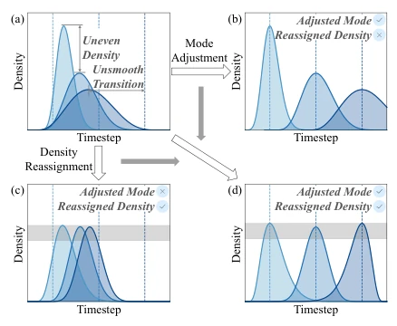
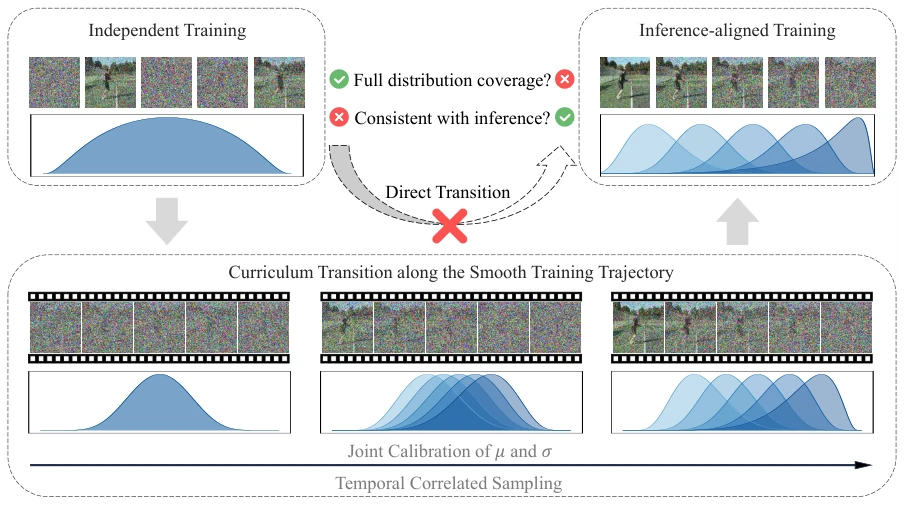
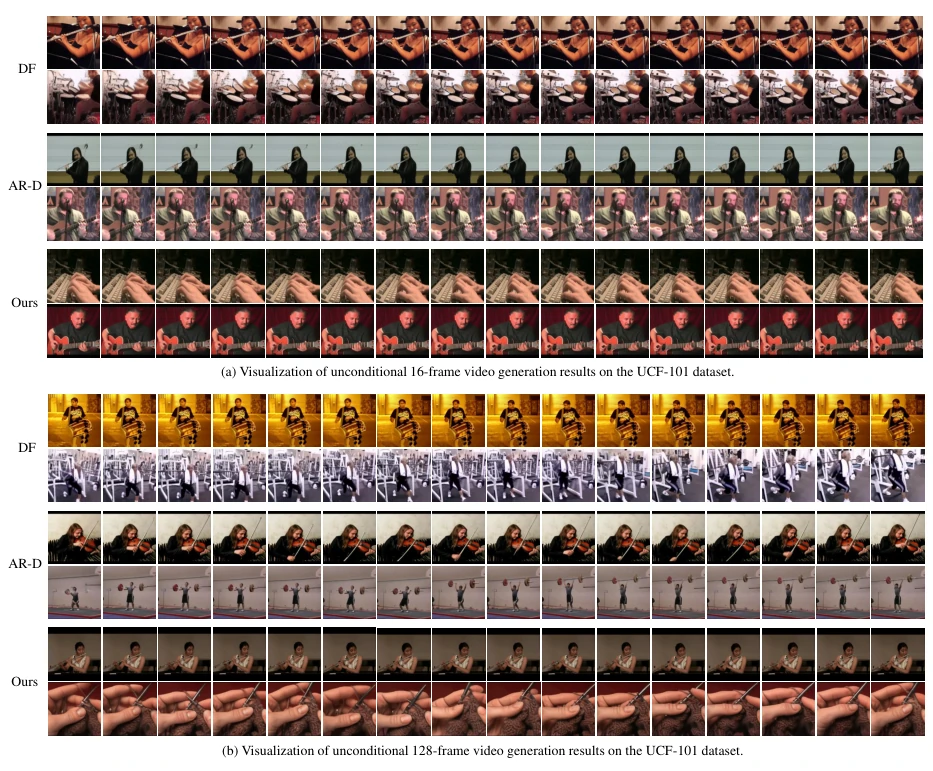

This paper taught the streaming video generation community a lesson on "having it both ways": broad noise coverage during training (independent sampling) and causal consistency during inference (progressive sampling). The authors did not resort to fancy distillation or complex architectures, but instead modeled noise sampling as a random process of frame indices, creating a "smooth transition" training curriculum. This approach indeed works well, cutting FVD by 36.6% directly on UCF-101, and long video extrapolation is also very stable. However, although this "roundabout way" curriculum learning is effective, the computational cost and hyperparameter tuning complexity are likely not low, after all, distribution parameters need to be dynamically calibrated during the training process. Additionally, although the authors boast good performance on autonomous driving world models, whether the generalization ability on complex scenarios like nuScenes can truly withstand the beating of long-tail distributions remains a question mark. Overall, this is a good paper using mathematical tricks to solve engineering pain points, but do not expect it to solve all the "hallucination" chronic diseases of video generation.
Streaming video generation is crucial in the construction of world models for embodied intelligence and autonomous driving, requiring models to infer future frames online sequentially. However, existing diffusion models have a fundamental mismatch between training and inference (train-inference mismatch). On one hand, progressive sampling (Progressive sampling) such as Rolling Diffusion [35] ensures inference consistency, but limits the coverage range of the noise distribution during training, leading to limited model generalization ability; on the other hand, independent sampling (Independent sampling) such as Diffusion Forcing [6] provides rich noise configurations, but destroys the temporal structure assumed during inference, leading to a disconnect between training and inference. This "sacrificing one for the other" dilemma makes existing methods difficult to balance training sufficiency and inference efficiency simultaneously. The authors point out that the existing two paradigms are essentially complementary, but lack a unified framework to smoothly connect them, leading to unstable performance when the model generates long horizons or performs zero-shot extrapolation. Therefore, there is an urgent need for a new training paradigm that can balance noise coverage and inference consistency.
This paper proposes Stream Forcing, a unified streaming video generation training framework. Its core idea is to reconstruct the noise level sampling during training as a random process of frame indices, and construct a continuous training trajectory from "independent sampling" to "inference-consistent sampling". The overall process is divided into three stages: Independent Diffusion Training, Curriculum Transition, and Inference Alignment Training. The specific implementation includes two major innovation modules: First is the Joint Calibration algorithm (Joint Calibration), used to satisfy constraints of trajectory smoothness and inter-frame coverage consistency. This method uses Logit-Normal distribution to parameterize the noise distribution of each frame, through grid search and global reference peak density matching, dynamically adjusting location parameters (μ) and scale parameters (σ), ensuring that the noise distribution pattern evolves uniformly during training and frame coverage is balanced. Second is the Temporal Correlative Sampling algorithm (Temporal Correlative Sampling), used to satisfy inter-frame correlation constraints. This algorithm is based on the Gaussian Copula mechanism, generating latent variable sequences with auto-correlation structure in standard normal space, then mapping back to the calibrated marginal distribution, thereby, while keeping the marginal distribution unchanged, gradually introducing inter-frame noise correlation (ρ increases from 0 to 1). Through this design, the model learns a broad noise distribution in the early stages of training, then smoothly transitions to an ordered denoising mode consistent with the inference stage, effectively solving the train-inference mismatch problem.

Figure 2. Illustration of trajectory constraints. Each subfigure shows marginals for a three-frame sampling process. (a) Neither Constraint 1 nor Constraint 2 is satisfied. (b) Only Constraint 1 is satisfied. (c) Only Constraint 2 is satisfied. (d) Both Constraints are satisfied.

Figure 3. Overview of the curriculum training. Our method builds a continuous curriculum transition between independent training and inference-aligned training that balances full distribution coverage with consistency at inference time.
The authors conducted extensive experiments on the UCF-101 and Taichi-HD datasets, and extended to the nuScenes dataset for autonomous driving scenarios. In the 16-frame unconditional generation task, Stream Forcing achieved an FVD of 177.0 on UCF-101, an improvement of 36.6% compared to SOTA; FVD was 73.4 on Taichi-HD, superior to AR-Diffusion [41] and Diffusion Forcing [6]. In the more challenging 128-frame zero-shot long-horizon extrapolation task, the method improved FVD by 27.9% on UCF-101, and improved by 10.9% on Taichi-HD, proving its strong generalization ability. Additionally, in the autonomous driving world model task, the method's FID and FVD on the nuScenes test set were both superior to DriveDreamer [48] and WoVoGen [30]. Ablation studies show that the three constraints of trajectory smoothness (TS), frame distribution coverage consistency (DCC), and inter-frame correlation (IFC) are indispensable, among which removing DCC leads to severe performance degradation. Meanwhile, the 2:1 ratio of the curriculum transition stage to the independent training stage was proven to be the optimal configuration. Visualization results also show that, compared to the jitter of Diffusion Forcing and motion loss of AR-Diffusion, the video generated by this method has more stable motion and richer details.

Figure 4. Visualization of unconditional video generation on UCF-101 dataset. DF: Diffusion Forcing [6]. AR-D: AR-Diffusion [41]. Our method presents higher visual quality and more robust long-horizontal extrapolation.